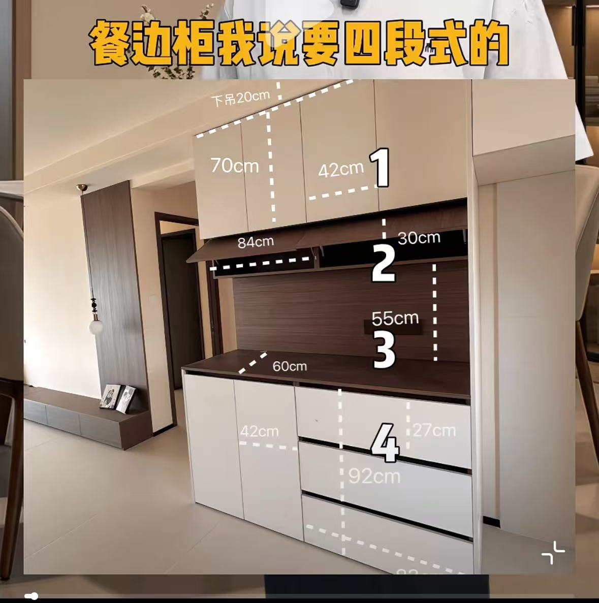
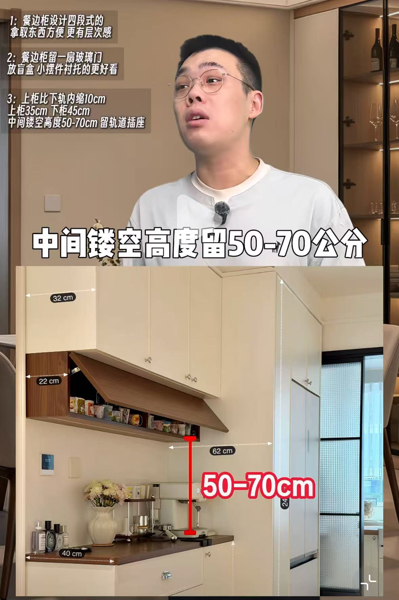
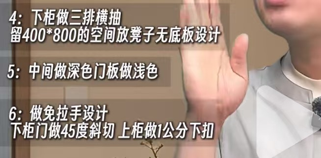
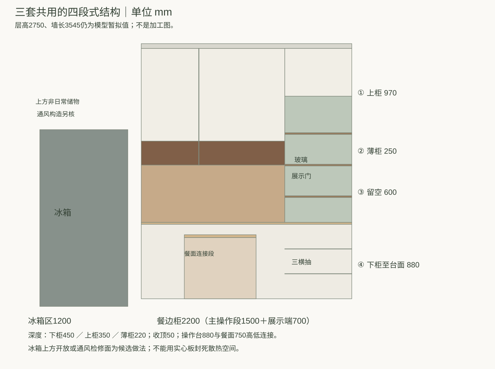
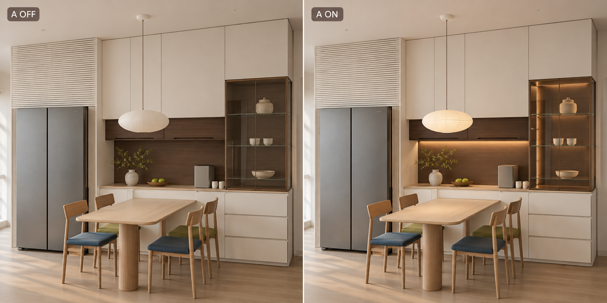
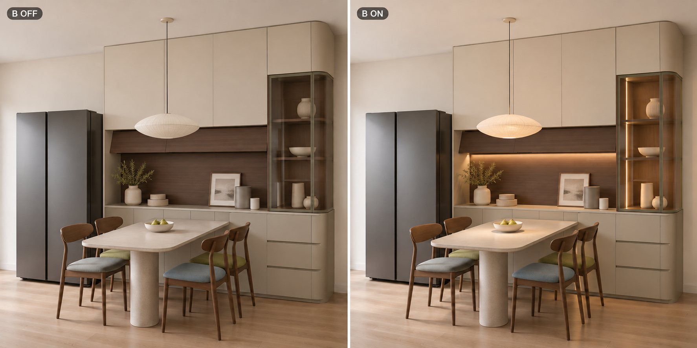
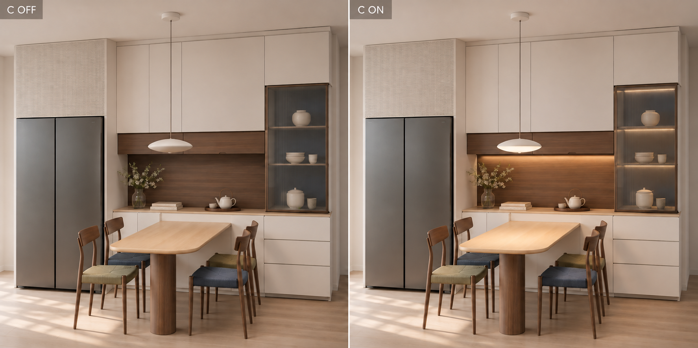
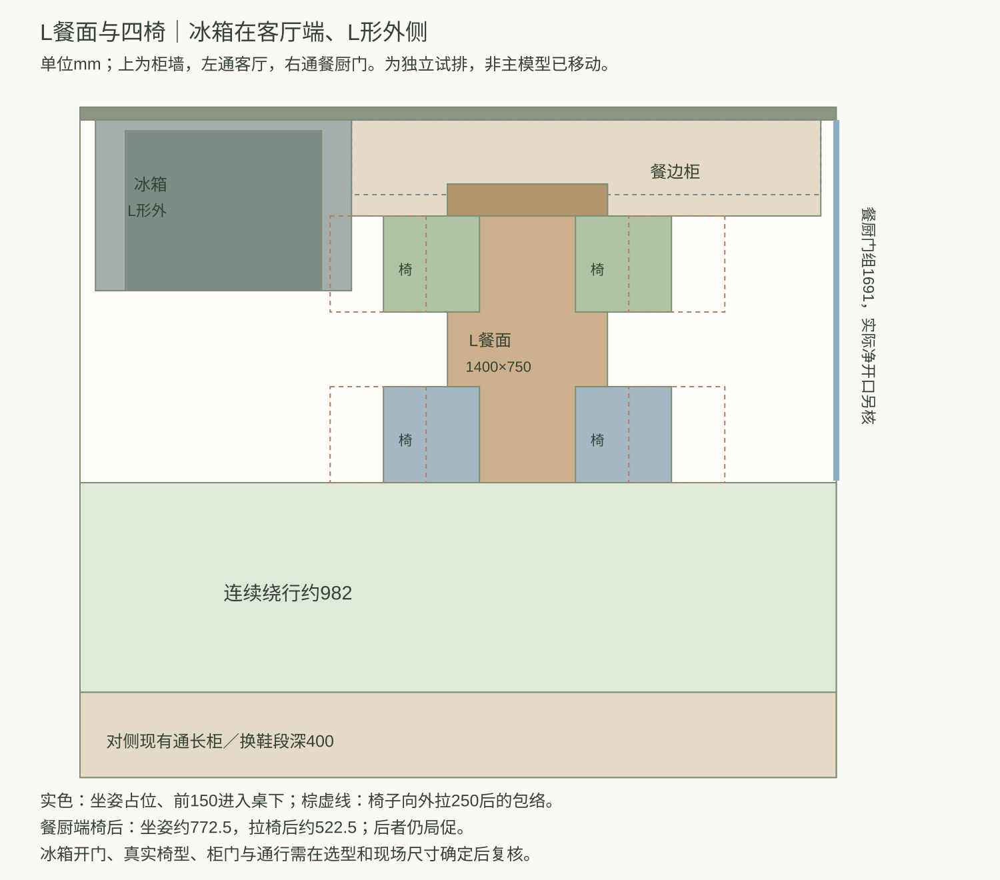

图一：四段式结构
落实：下柜、操作留空、夹层翻门薄柜、上柜都保留；右端三横抽。
调整：参考中的高度、深度不直接抄数值，改成适合本案的880台面、600留空、250薄柜。
INDEPENDENT STUDY · 04 · 2026.11.05

落实：下柜、操作留空、夹层翻门薄柜、上柜都保留；右端三横抽。
调整：参考中的高度、深度不直接抄数值，改成适合本案的880台面、600留空、250薄柜。

落实：上柜350、下柜450，薄柜220；保留局部玻璃展示和隐藏电源的思路。
调整：电源位置按最终小电器确定；薄柜翻门在上柜下方开启，限位、五金和净空需做节点验证。

落实：右端700宽三横抽；中部深木色、门板浅色；下柜斜切拉手，上柜下口留手位。
调整：不增加400×800凳子车库：用户已取消卡座，并要求四椅及L形餐面，此处不挤占抽屉和活动区。
没有照搬参考视频的所有数字和房间。保留构造语言，同时满足本案四椅、L连接和冰箱端位。

方案 A · 待选
以胡桃木框住操作壁龛和夹层薄柜，浅木餐面从框景下方伸出；右端细框玻璃柜收住立面。

左：人工灯全关；右：人工灯全开。日光保留，柜体与桌椅相同。概念表现不代替尺寸立面。
| 材质 | 暖白哑光上、下柜＋胡桃木中段＋浅橡木餐面；绿、蓝只用于餐椅软包和小物。 |
|---|---|
| 灯光 | 纸布感椭圆餐吊灯＋薄柜底工作灯＋玻璃柜内柔光。 |
| 冰箱上方 | 冰箱上方不设储物门，研究同墙色百叶通风检修面；风路、开孔面积和侧距须按最终机型设计。 |
方案 B · 待选
直线四段式柜体接圆弧展示端，浅石色餐面和椭圆支座形成雕塑感；不是另加一座大岛台。

左：人工灯全关；右：人工灯全开。日光保留，柜体与桌椅相同。概念表现不代替尺寸立面。
| 材质 | 暖白上柜＋灰苔绿下柜和玻璃框＋胡桃木中段＋浅暖灰哑光石材餐面。 |
|---|---|
| 灯光 | 克制的柔光餐吊灯＋薄柜底工作灯＋圆弧展示端柔光。 |
| 冰箱上方 | 冰箱独立在客厅端，取消整个上方柜盒，顶部是开放的连续墙面；不保留被柜盒框出的黑色横洞。 |
方案 C · 待选
以连续木纹薄柜、细木餐面边和长向分缝统一柜桌；右端半透玻璃只露出少量深蓝背景。

左：人工灯全关；右：人工灯全开。日光保留，柜体与桌椅相同。概念表现不代替尺寸立面。
| 材质 | 暖白门板＋棕灰胡桃木中段和细边＋浅木餐面＋窄铜色玻璃框；少量深蓝、绿色。 |
|---|---|
| 灯光 | 细薄陶瓷/乳白玻璃餐吊灯＋薄柜底工作灯＋半透展示内光。 |
| 冰箱上方 | 冰箱上方研究同墙色微孔通风检修面，不画成高位储物门；散热条件未选型验证。 |
单位mm。墙长3545、净高2750是模型暂拟；组合宽3400＝冰箱区1200＋真正餐边柜2200，待现场量尺及机型确认。
| 四段式主操作段 | 宽1500：台面高880；操作区净高600；夹层薄柜高250、离地1480–1730；上柜高970、离地1730–2700；顶收口50。 |
|---|---|
| 三个进深 | 下柜450，上柜350，薄柜220。三段深度形成层次；板厚、背板和五金另扣，不把外深当作内部净深。 |
| 展示及抽屉 | 右端700宽局部玻璃展示，下方三横抽。左端450柜与右端700三抽是可独立使用的下柜收纳；中间750连接和邻椅300固定侧段不计作活动储物。 |
| L形餐面 | 1400×750×高750，面厚30，桌下约720；后部150插接固定柜段，超出450深柜面1250。880操作台与750餐面差130；圆角先按R60研究，承重和桌腿位置需节点深化。 |
| 四把餐椅 | 两长边各二，不设端头椅和吧椅。座高约440–460建议范围；示意坐姿以前150进入桌下试算。 |
| 常规双开门冰箱 | 先以920×750×1850占位，非已选型号。门体略突出柜侧，开门和抽屉轨迹另核。上方不计日常收纳；通风面并非密封封板。 |
| 较高的上柜 | 600＋900两个模块研究下拉取物五金，下拉净深、轨迹、载荷和门板需用选定安装图验证；最高处仅低频储物，不声称所有层板都能徒手够到。冰箱上方不生搬下拉机构。 |
| 薄柜翻门 | 两扇600＋900模块。翻起净空、限位和灯槽一起校核，避免抬门碰上方前凸上柜；概念图中的闭门外观不代表五金已验证。 |
| 灯光与电源 | 工作、展示、餐吊灯三组分控，3000K、Ra≥90为选型目标，可调光。工作灯藏于薄柜底铝槽加扩散罩；驱动器留检修。电源按最终小电器位置，不裸露长条插线板。 |

这是独立叠加研究，不表示主模型里的餐桌已经移动或餐边柜已经安装。
原三图是构造主线，在线参考补充圆弧、框景、材质连接和分缝处理；没有用网图替换用户指定功能。
完整参数 · 实际出图提示词与参考输入 · 独立关系草模 · 关系草模图